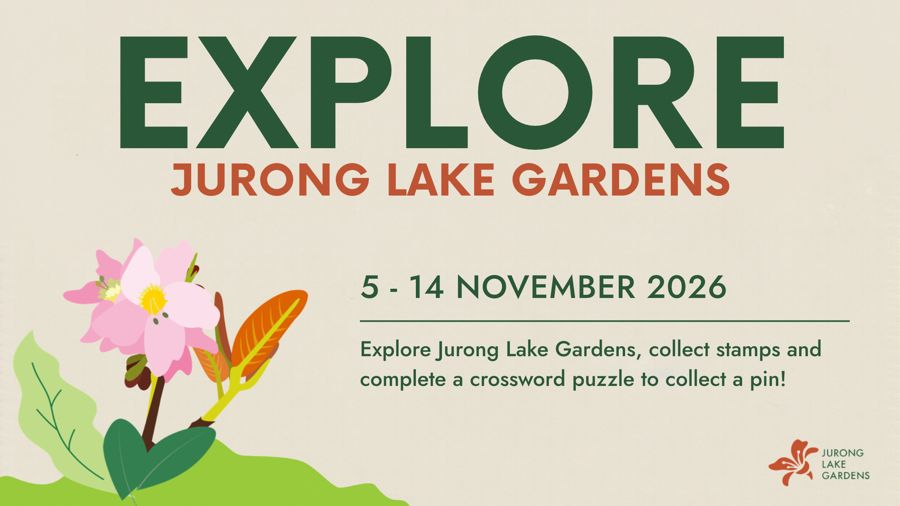

Explore Jurong Lake Gardens stamp rally
NParks / Jurong Lake Gardens
- 🆕Last week: ends Sat 14 Nov
- 💡Free guaranteed pin, no purchase, ends Saturday.
- 🎁Exclusive Jurong Lake Gardens magnetic pin, random design
- ✅Get stamps at 3 info counters, finish the crossword, redeem at any counter
- 📅5–14 Nov; 8.30am–6pm
- 📍Any Jurong Lake Gardens information counter
- ⚠️While stocks last